Social media designer Goiânia
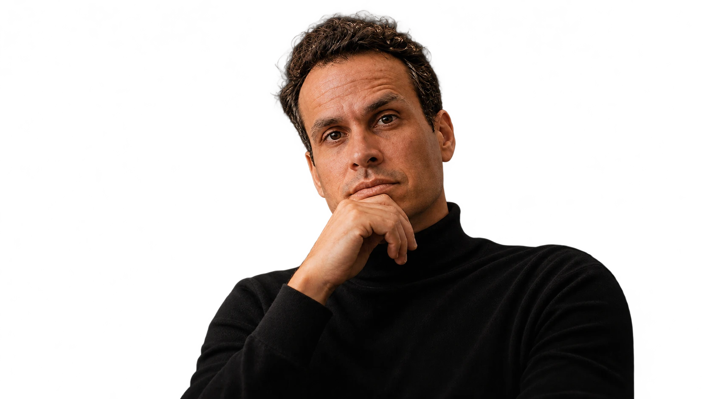
Design que comunica,
posiciona e vende.
Critério antes
da ferramenta.
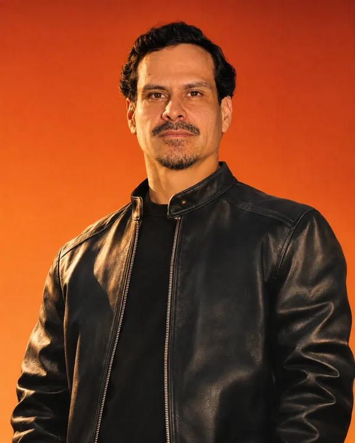
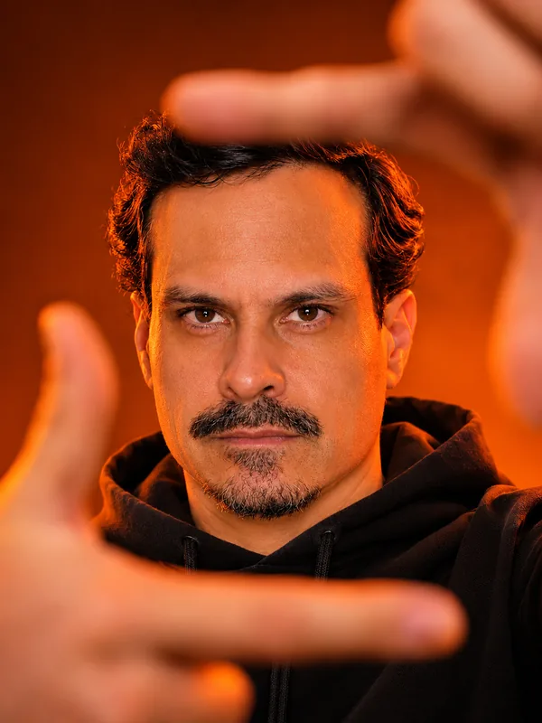
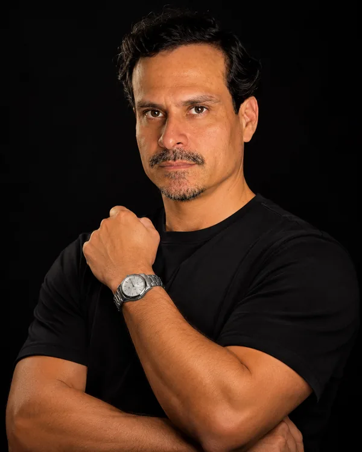
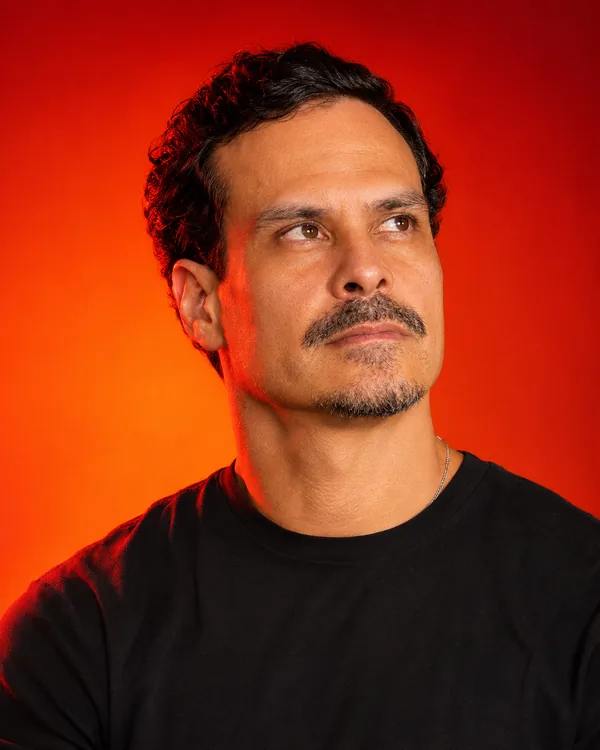
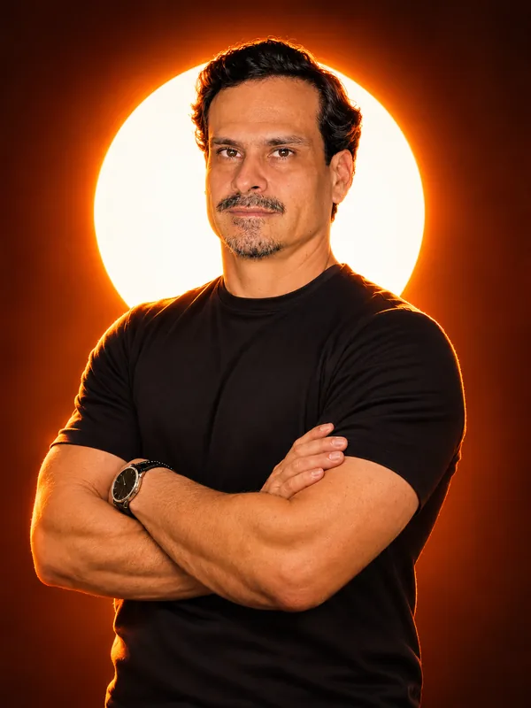
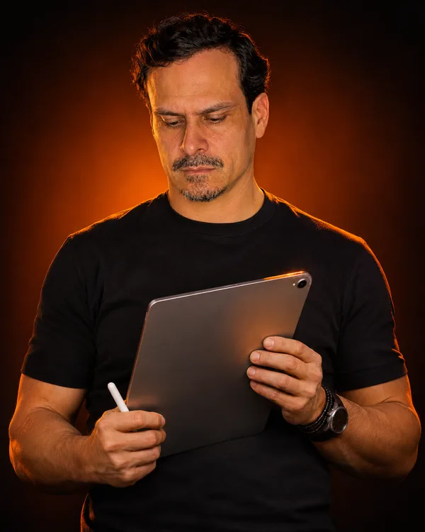
Oi, eu sou o Flávio, designer gráfico e social media desde 2017, com MBA em Social Media. Ajudo criadores e empresas a fortalecer a presença digital com design e estratégia que posicionam marcas e geram resultados.
Projetos selecionados
-
We Digital
Ver projeto -
Low & Fit
Ver projeto -
Moda Africana
Ver projeto -
Proteção Veicular
Ver projeto
O Laboratório
Cada capa vira uma cena, e eu faço todos os papéis. A IA produz; a direção é minha.
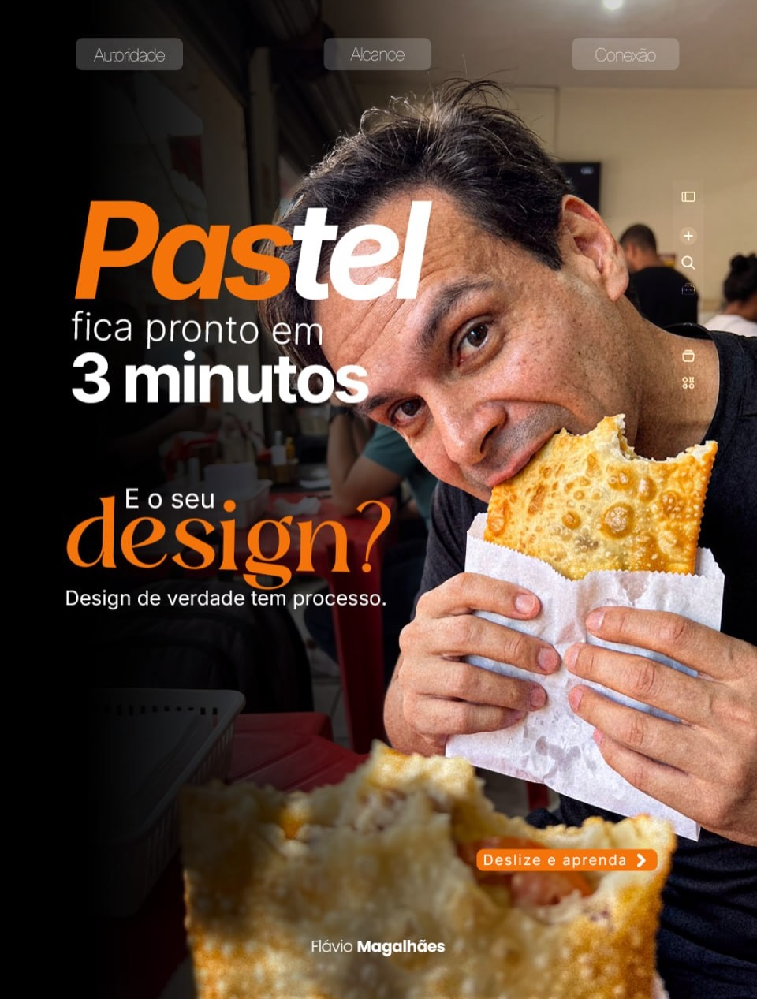
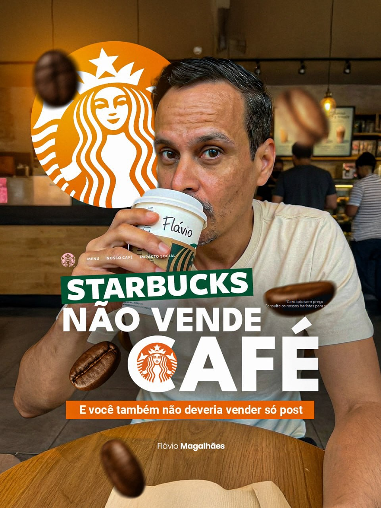
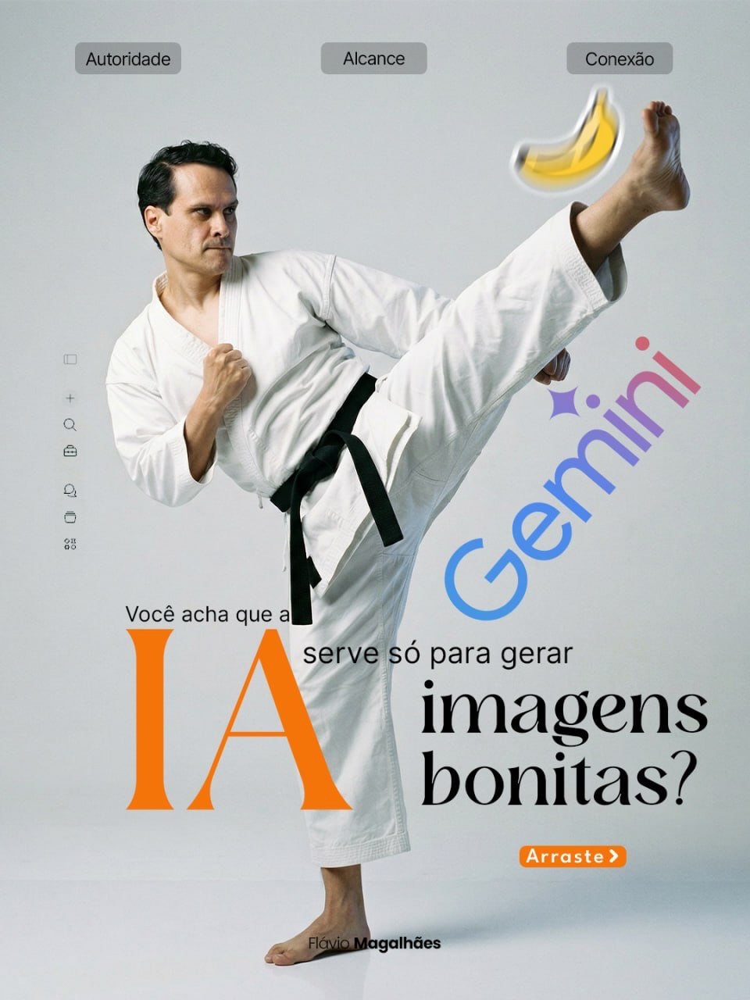
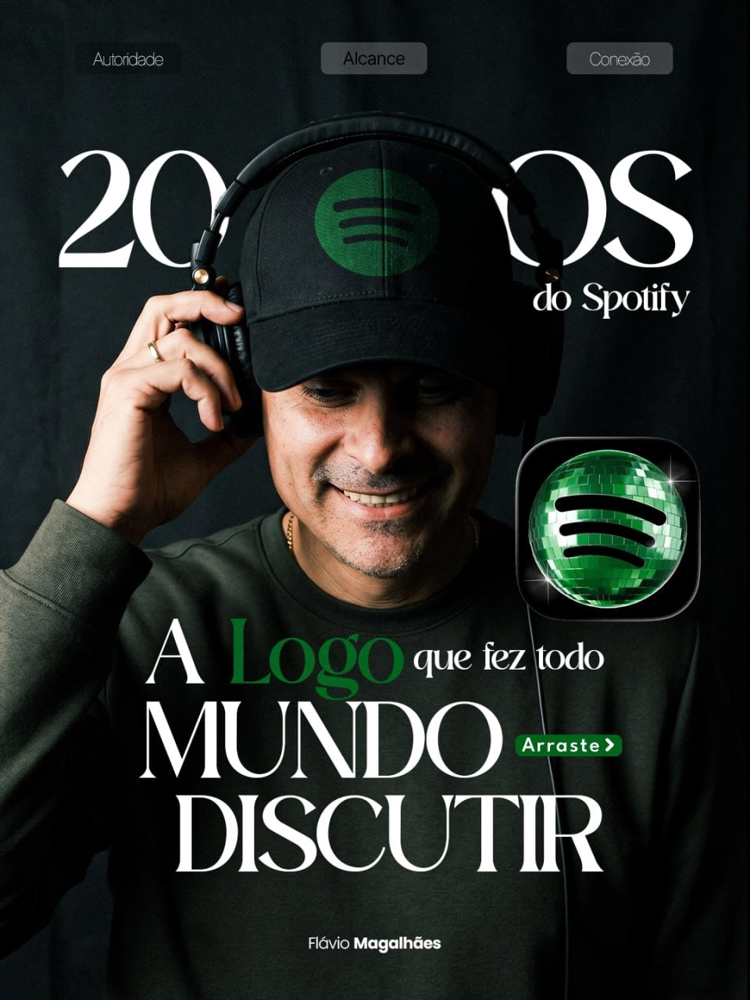
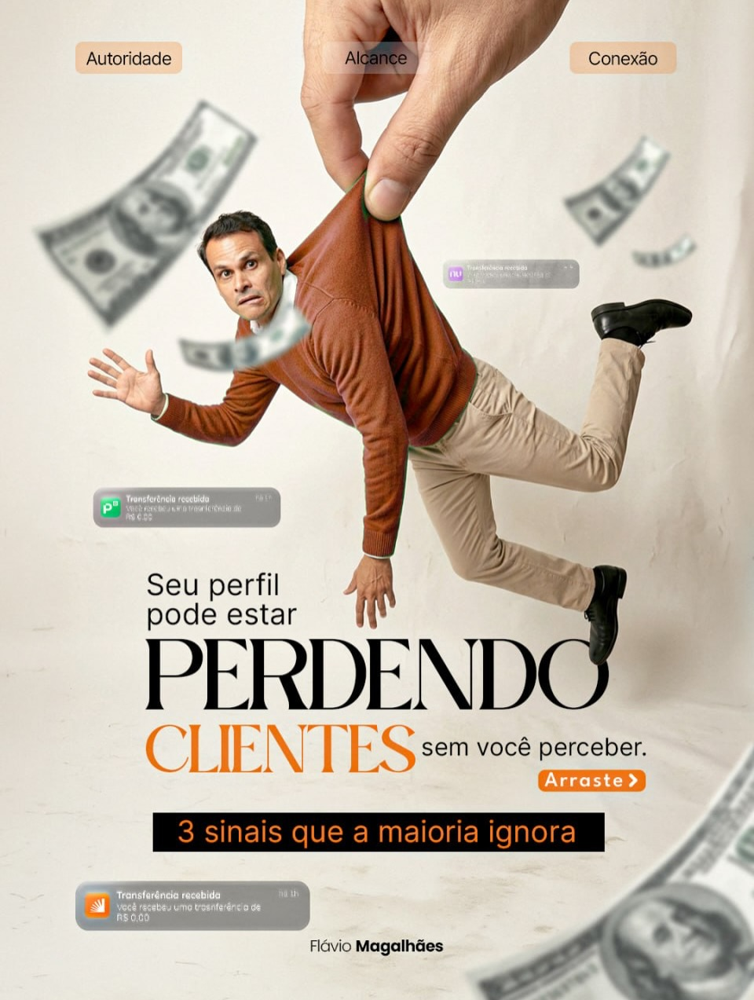
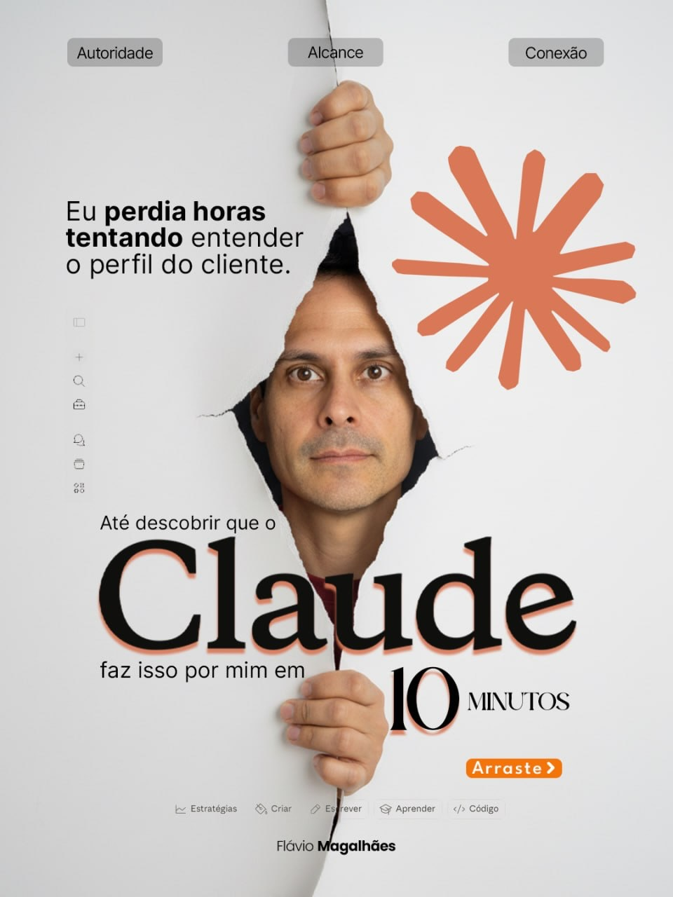
O que eu faço
-
Design para Social Media
Pedir orçamento -
Social Media
Pedir orçamento -
Grupo no Telegram
Entrar no grupo
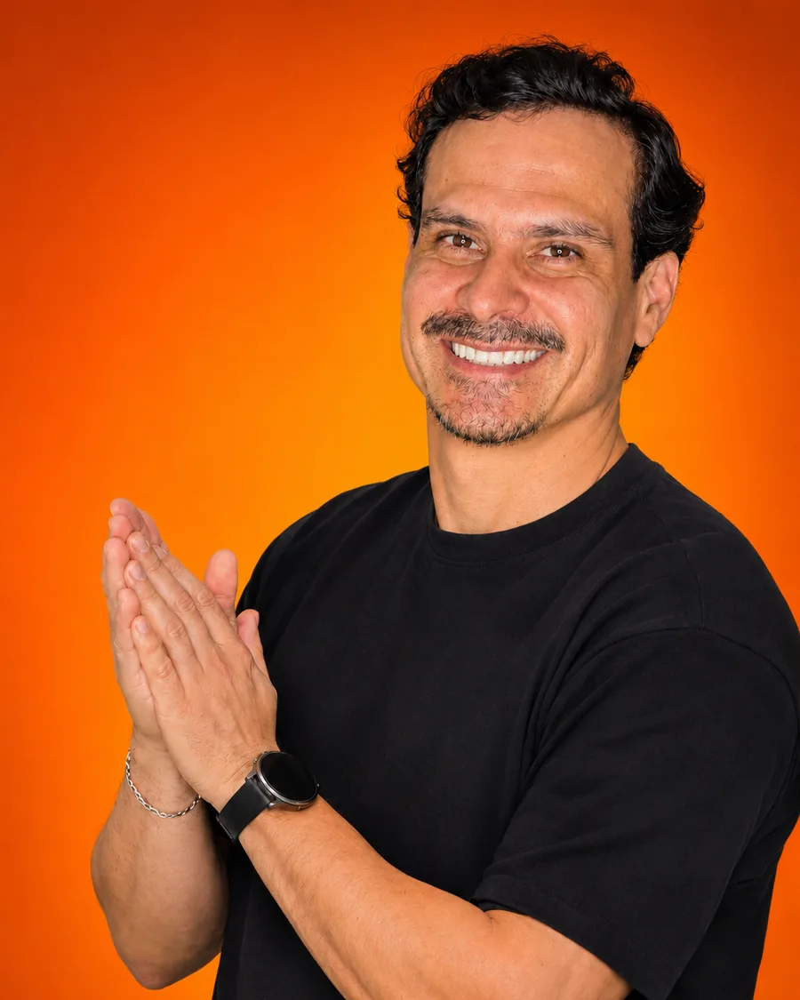